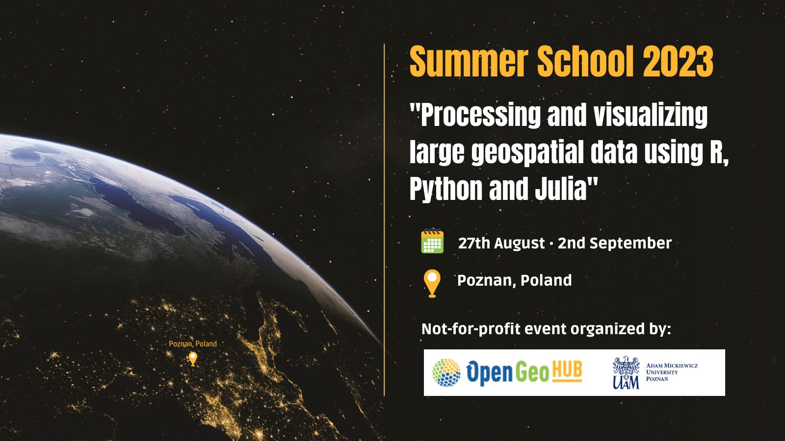

library(sf)
library(tidyverse)OpenGeoHub Summer School 2023
“Processing and visualizing large geospatial data using R, Python and Julia”

Tidy geographic data with sf, dplyr, ggplot2, geos and friends (Robin Lovelace)
This lecture will provide an introduction to working with geographic data using R in a ‘tidy’ way. It will focus on using the sf package to read, write, manipulate, and plot geographic data in combination with the tidyverse metapackage. Why use the sf package with the tidyverse? The lecture will outline some of the ideas underlying the tidyverse and how they can speed-up data analysis pipelines, while making data analysis code easier to read and write. We will see how the following lines
can provide a foundation on which the many geographic data analysis problems can be solved. The lecture will also cover on more recently developed packages that integrate with the tidyverse to a greater and lesser extent. We will look at how the geos package, which provides a simple and high-performance interface to the GEOS library for performing geometric operations on geographic data, integrates with the tidyverse. The tidyverse is not the right tool for every data analysis task and we touch on alternatives for working with raster data, with reference to the terra package, and alternative frameworks such as data.table. Finally, we will also look at how the ‘tidy’ philosophy could be implemented in other programming languages, such as Python.
The focus throughout will be on practical skills and using packages effectively within the wider context of project management tools, integrated development environments (we recommend VS Code with appropriate extensions or RStudio), and version control systems.
Material del curso: https://ogh23.robinlovelace.net/
GitHub repository: https://github.com/robinlovelace/opengeohub2023
Raster and vector data cubes in R (Edzer Pebesma)
A common challenge with raster datasets is not only that they come in large files (single Sentinel-2 tiles are around 1 GB), but that many of these files, potentially thousands or millions, are needed to address the area and time period of interest. In 2022, Copernicus, the program that runs all Sentinel satellites, published 160 TB of images per day. This means that a classic pattern in using R consisting of downloading data to local disc, loading the data in memory, and analysing it is not going to work. This lectures describes how large spatial and spatiotemporal datasets can be handled with R, with a focus on packages sf and stars.
For practical use, we classify large datasets as too large:
- to fit in working memory,
- to fit on the local hard drive, or
- to download to locally managed infrastructure (such as network attached storage)
These three categories may (today) correspond very roughly to Gigabyte-, Terabyte- and Petabyte-sized datasets. Besides size considerations, access and processing speed also play a role, in particular for larger datasets or interactive applications. Cloud native geospatial formats are formats optimised with processing on cloud infrastructure in mind, where costs of computing and storage need to be considered and optimised.
Material del curso: https://edzer.github.io/OGH23/dc.html / R book
GitHub repository: https://github.com/edzer/OGH23
Unsupervised classification (clustering) of satellite images with R (Krzysztof Dyba)
Unsupervised classification of satellite images is the process of grouping similar pixels on an image into homogeneous clusters based primarily on their spectral characteristics. This approach does not require reference (labeled) data, unlike supervised classification, therefore it can be used as a method of first choice. Satellite image classification is commonly used in a variety of fields, including environmental monitoring, land cover mapping, and disaster management. The generated thematic maps can be used to identify and monitor changes in land use, and assess the impact of natural disasters.
During this workshop, participants will gain practical knowledge and skills to perform unsupervised classification of Landsat data using the R language. It will be demonstrated step by step how to use and prepare raster data for analysis, popular grouping methods will be discussed and finally we will prepare a land cover map with interpretation of the results. The workshop will also cover the challenges and limitations of unsupervised classification, such as subjective interpretation of results difficulty of selecting the optimal number of clusters, and validation methods for ensuring the accuracy and reliability of results.
The workshop is aimed at beginners, but basic knowledge of GIS and satellite remote sensing is required.
Material del curso: https://kadyb.github.io/OGH2023/
GitHub repository: https://github.com/kadyb/OGH2023
Introduction to working with spatial data in Python (Michael Dorman)
Python is an extremely popular general-purpose programming language. It is used in a wide range of settings and for various purposes, including for spatial data processing and analysis.
The aim of this tutorial is to give an introduction to methods of working with spatial data using Python. The tutorial will be split into two parts, introducing two central Python packages:
geopandas---For working with vector layersrasterio---For working with rasters
The tutorial will demonstrate typical basic workflows of processing spatial data: data input, processing, geo-computation, and exporting of the results. We will use realistic datasets, such as GTFS public transport data and remote sensing products.
By the end of the tutorial, the participants will be able to:
Import spatial data from files
Subset and process the data
Graphically display the data
Perform spatial calculations (such as calculating distances, or applying raster algebra operators)
Export the results
To follow along and reproduce the results on your own computer, the prerequisite is to be able to run Python code in a Jupyter Notebook interface, linked to a Python environment with the two above-mentioned packages installed. Instructions will be sent in advance.
Material del curso: https://geobgu.xyz/presentations/p_2023_ogh/
Processing geospatial data using JuliaGeo framework (Marteen Pronk)
Julia is a programming language that is simple to write and scriptable like Python and R, but fast like C or C++. At 10 years, it's a young language, so the ecosystem isn't as large and mature as you want it to be. Maarten Pronk was an early adopter of the language in his research at Deltares, a Dutch research institute. In this lecture(s) he will introduce Julia, his motivation to use it and his OSS journey. Half of the lecture will be non-spatial, while the latter half will focus on the JuliaGeo ecosystem and showcased some of the possibilities of the Julia language.
The JuliaGeo GitHub organization is intended primarily for the collaborative development of packages that are generally applicable across the geospatial and geosciences domains. For dealing with geospatial data, packages from the JuliaGeometry and JuliaImages organizations may also be of interest, and we will aim for good integration with those. Since the JuliaGeo organization aims to provide mostly general tools, more domain specific packages may be better suited for development in domain specific organizations. JuliaClimate is a nice example of such an organization that will be especially interesting to climate, atmosphere and ocean scientists. EcoJulia also provides some tools for generating and downloading spatial data sets, with a focus on ecological applications.
GitHub repository: https://github.com/evetion/OGH2023